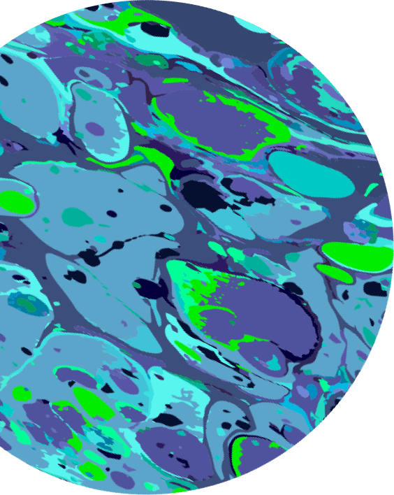

<section class="section" *ngIf="randomLocation$ | async as location">
  <div class="container">
    
    
    <div class="wrap">
      <div class="location-wrap">
        <ul class="location-list">
          <li class="location-item">
            <p class="location-title">Planet:</p>
            <p class="location-text">{{ location.name }}</p>
          </li>
          <li class="location-item">
            <p class="location-title">Type:</p>
            <p class="location-text">{{ location.type }}</p>
          </li>
          <li class="location-item">
            <p class="location-title">Dimension:</p>
            <p class="location-text">{{ location.dimension }}</p>
          </li>
        </ul>
        <button type="button" class="location-btn" (click)="addToFavorite(location, $event)">add to favorite</button>
      </div>
      <button type="button" class="generate-btn" (click)="generateLocation()">Teleport</button>
    </div>
    <div
      class="residents-wrap"
      *ngIf="
        location.residents.length && isCharacterArray(location.residents);
        else hasNoResident
      ">
      <p class="residents-title">Residents</p>
      <ul class="residents-list">
        <li *ngFor="let resident of location.residents | slice: 0 : displayLimit; trackBy: trackByFunction" class="residents-item">
          
          <div class="info-wrap">
            <ul class="info-list">
              <li class="info-item">
                <p class="info-title">Name:</p>
                <p class="info-text">{{ resident.name }}</p>
              </li>
              <li class="info-item">
                <p class="info-title">Status:</p>
                <p class="info-text">{{ resident.status }}</p>
              </li>
            </ul>
            <button type="button" class="resident-btn" (click)="addToFavoriteResident(resident, $event)">add to favorite</button>
          </div>
        </li>
      </ul>
      <button class="generate-btn show-more" (click)="showMore(location.residents)" *ngIf="displayLimit < location.residents.length">Show More</button>

    </div>
    <ng-template #hasNoResident>
      <div class="residents-wrap">
        <p class="residents-title">No residents</p>
      </div>
    </ng-template>
  </div>
</section>
